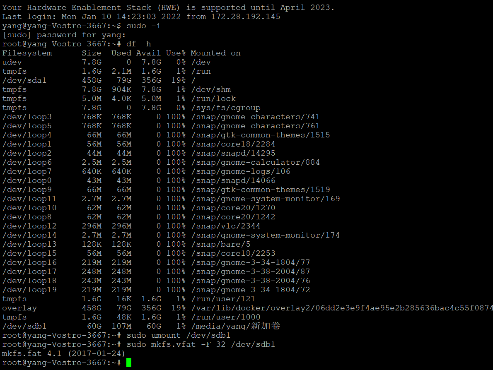
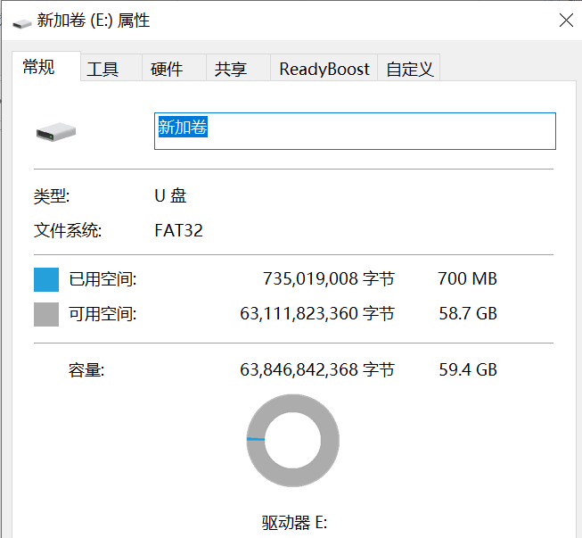
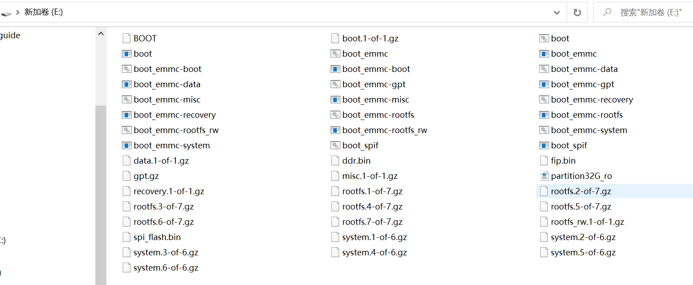
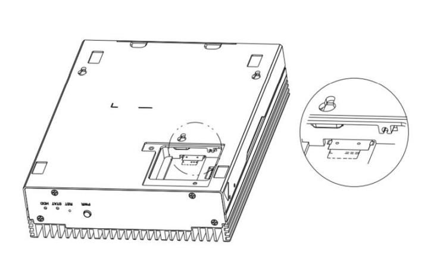

3.3.1. 刷机问题¶
3.3.1.1. 手动升级 SE5、SM5、SE7、SM7、SE9、SM9 固件的方式¶
SoC模型下有多种更新固件的方式：
1. 文件替换 直接更新 kernel、预编译的SDK库以及bootloader等文件 ：文件替换方式是指在SoC系统中直接通过替换对应文件的方式分别升级bootloader、kernel和SDK等其它软件。 这种方式有一定的风险，如不同软件组件之间的版本匹配、文件损坏等。请参考《 智算模组SM5软件开发指南 》2.2软件更新 b.文件替换 章节。
备注
升级kernel: sudo cp emmcboot.itb /boot/;
升级预编译的库：sudo tar xzf system.tgz -C /system;
升级bootloader： sudo flash_update -i spi_flash.bin -b 0x6000000 -f 0x0;
保存并重启使生效：sudo sync; sudo reboot.
2. 使用 SD卡刷 烧写整个固件：这种方式最为干净可靠，理论上只要您的SE5/SM5硬件没有损坏，都可以进行SD卡刷机， 具体步骤请参考《 SE5用户手册 》6.1节 系统升级 或《 智算模组SM5软件开发指南 》2.2软件更新 a.SD卡刷机 。（注意：带有预置算法应用的卡刷包和 干净系统的卡刷包 是不一样的，请在升级前核实清楚您的需求，并向技术支持获取相应卡刷包； 卡刷会重写整个eMMC，也即您存储在eMMC的数据全部会丢失，请务必做好数据备份。
3. 通过以太网，使用 tftp刷机 专用文件 升级： 请参考《 SM5开发手册 》7.4 使用tftp刷机。 或参考 《 刷机包类型转换工具与tftp刷机方法 》。
使用 DDT设备扫描工具 更新：请联系技术支持获取，目前仅提供Windows客户端。需要注意的是，DDT设备扫描工具依赖于我方安装在SE5/SM5中的服务程序，若您使用自己定制的固件和操作系统，本方式不一定适用。
- DDT 设备扫描工具是算能科技 SE5、SM5、SE7、SM7、SE9、SM9 产品（以下简称产品）配套的辅助工具，它主要提供如下两种功能：
自动扫描：发现同一局域网内的所有相关 SE5、SM5、SE7、SM7、SE9、SM9 产品，支持 IP 地址等基础信息更改。
软件升级：支持对勾选的指定产品进行单个或者批量软件升级。
3.3.1.2. SE5、SM5、SE7、SM7、SE9、SM9 等设备如何使用SD卡刷新固件¶
准备一张16GB以上的miniSD卡和读卡器 ，并将卡格式为 fat32格式。 如果不方便格式化为改模式，则可以使用下面的方式制作卡刷包，也可以参考：https://developer.sophgo.com/thread/555.html。
Ubuntu系统（版本16.04）可以通过界面直接格式为 fat32 (Compatible with all system and devices(FAT))
Ubuntu系统（版本18.04）通过命令行的方式(下面举例)
df -h ----找到U盘的序列号，本例“/dev/sdb1” sudo umount /dev/sdb1 ----解除U盘挂载 sudo mkfs.vfat -F 32 /dev/sdb1 ----格式化U盘为fat32格式
win10需要磁盘管理删除卷再添加新卷，用Diskgenius工具格式化为 fat32

下载压缩包，并找到固件升级包( 例如： sdcard_V5R7C01.tgz), 并将其解压后的所有文件拷贝到miniSD卡的根目录下：
确保设备 处于 断电状态 ，拆卸维护窗盖板，插入 MicroSD 卡，并将设备上电，此时STAT灯呈现为红色（常亮）状态： (下图例子为SE5)
等待设备升级完成，待STAT灯由红色（常亮）变为绿色（闪烁）状态后，将设备下电，并将 MicroSD 卡移除；
升级完成，将设备重新上电。